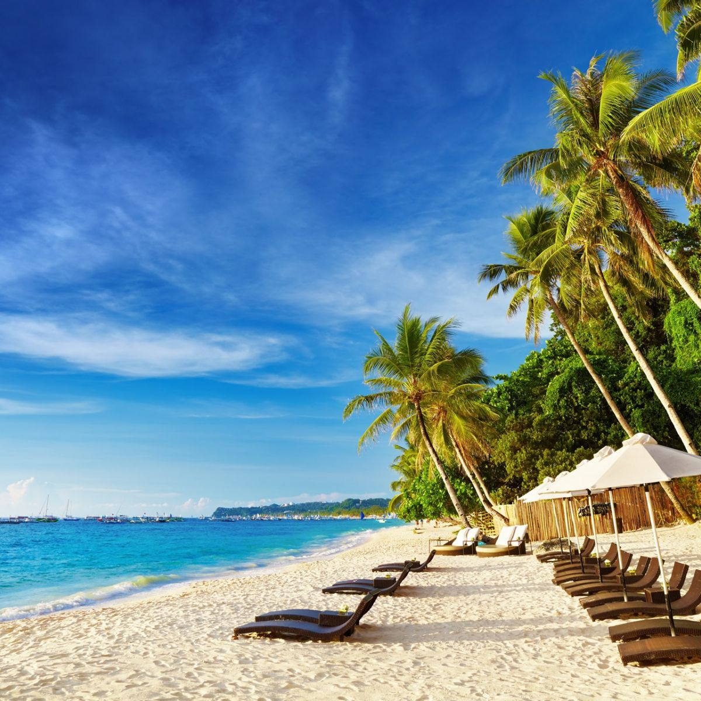
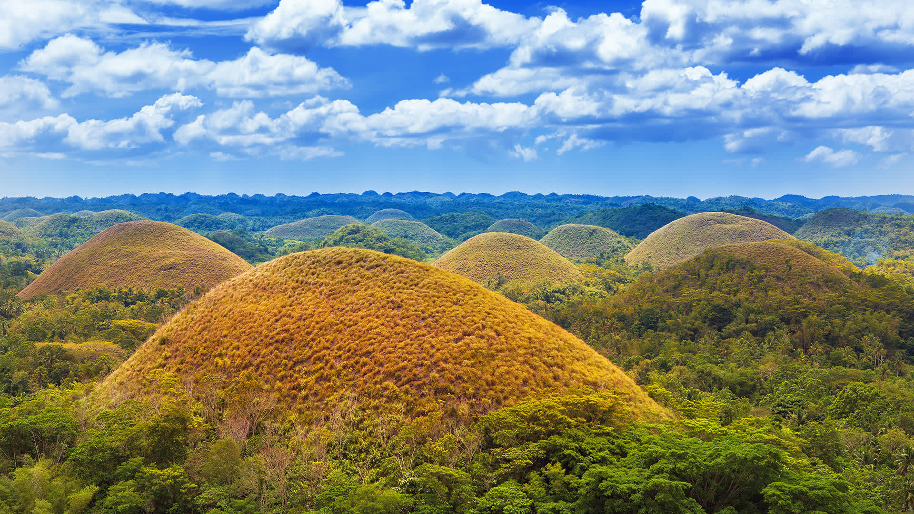
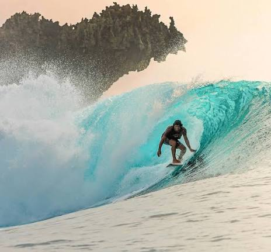

Our Services
Explore the travel services offered by PatrickStar Tour Guide. Discover destinations, browse tour package information, and find inspiration for your Philippine adventure.
Featured Destinations

Boracay
World famous white sand beach.

Palawan
Beautiful lagoons and hidden islands.

Bohol
Home of Chocolate Hills and Tarsiers.

Siargao
Surfing Capital of the Philippines.